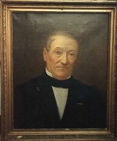

Florentin Joseph DROULERS — Né le 21/02/1799 à Wasquehal — Décédé le 14/09/1864 à Lille
Florentin Joseph DROULERS
Né le 21/02/1799 à Wasquehal
Décédé le 14/09/1864 à Lille
Résumé
Florentin Joseph Droulers est le deuxième fils de Pierre Joseph Droulers, cultivateur, filateur et sucrier établi à Wattrelos depuis plusieurs générations. Là où son père avait ouvert la voie de la proto-industrie — culture du lin, filage, distillerie —, Florentin franchit le pas décisif vers la grande industrie. Il quitte Wattrelos pour Lille et y rencontre Donat Agache (1805-1857), fils d'un cultivateur de Hem qui vient d'établir en 1824 rue du Croquet, dans le quartier Saint-Sauveur, un commerce de lins et de fils. En 1828, les deux hommes s'associent : Florentin apporte son expérience du textile et ses capitaux, Donat Agache son entreprise naissante. La société Agache et Droulers est née.
L'affaire prospère rapidement. Dès 1840, la filature Agache et Droulers figure parmi les quatre plus importantes filatures de lin lilloises, avec 6 000 broches, aux côtés de Scribe Labbé et Le Blan. En 1849, la crise économique consécutive à la révolution de 1848 met en faillite la filature de lin que Julien-Thimotet Le Blan avait installée à Pérenchies en 1838 et qui employait alors 350 ouvriers. Agache et Droulers saisissent l'opportunité et rachètent l'usine à bas prix. C'est l'acte fondateur de ce qui deviendra la plus grande entreprise française de filature de lin : les Établissements Agache, avec leurs usines de Pérenchies, La Madeleine et Seclin, et leurs 2 000 ouvriers à la veille de la Grande Guerre.
Lors de la visite de Napoléon III à la filature de Lille en 1856, l'Empereur remet personnellement la croix de la Légion d'honneur à Florentin Droulers, « premier en nom dans la Société ». La nomination officielle, telle qu'elle figure dans la base Léonore (cote L0807014), est datée du 6 octobre 1873 — soit neuf ans après son décès, ce qui suggère une régularisation administrative tardive d'une décoration remise de vive main par l'Empereur.
Florentin ne verra pas l'apogée de cette entreprise. Il décède le 14 septembre 1864, six ans avant la séparation amiable des deux branches qui donnera à la famille Agache l'usine de Pérenchies et à la famille Droulers l'établissement de Lille. C'est son fils Charles Henri Droulers qui, avec Édouard Agache fils de Donat, développe l'affaire jusqu'à cette séparation de 1870. Charles Henri Droulers épousera Joséphine Prouvost, fille d'Amédée Prouvost fondateur du Peignage lainier de Roubaix, unissant ainsi les dynasties Droulers et Prouvost. De cette union naîtra Madeleine Droulers, qui épouse Eugène Wattinne, dont la fille Agnès Wattinne épouse Claude Saint-Léger en 1922.
Par cette lignée indirecte — Pierre Joseph Droulers, Florentin frère de Louis, Charles Henri, Madeleine, Agnès —, Florentin est le frère de l'ancêtre qui ancre notre famille dans les origines mêmes des Établissements Agache, dont André Saint-Léger puis son fils Claude seront administrateurs quatre-vingts ans après la fondation.
Sources :
- données familiales (gedcom)
- Wikipédia, Entreprise Agache
- Livre du Centenaire Agache, 1928
- Si Pérenchies m'était contée, centenaire Agache 1928
- Thierry Prouvost, généalogie Droulers-Prouvost
- base Léonore, notice L0807014
{kind=link}

📷 Cliquez pour voir 1 photo(s)